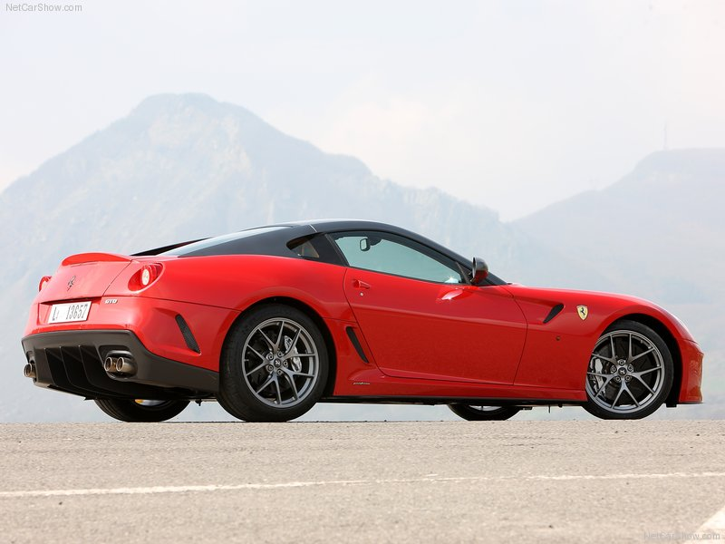
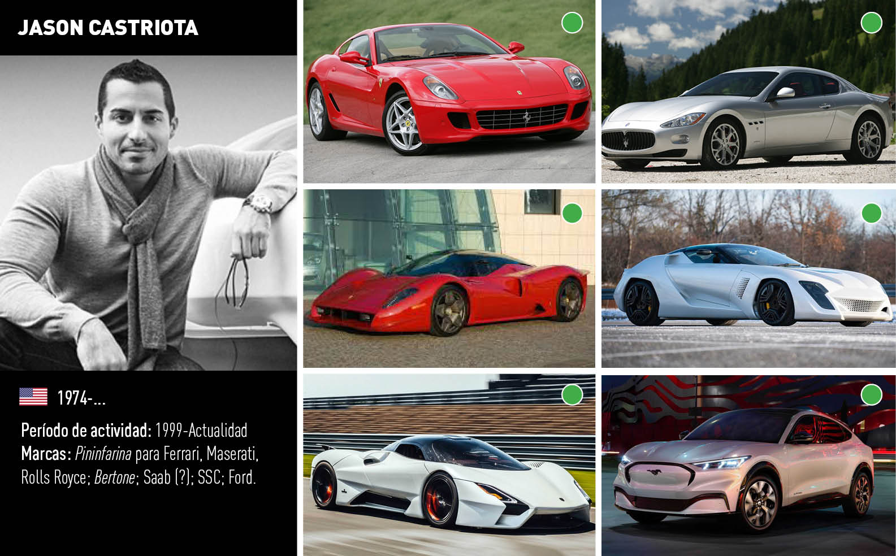

The new Ferrari 599 GTO is an extreme V12
berlinetta developed to a specific performance-oriented brief.
The GTO (Gran Turismo Omologata)
moniker instantly calls to mind two Ferraris that have entered the collective imagination as symbols of
performance.

After the 1962 250 GTO, which swept the boards
in GT racing categories in the 1960s and is now a highly prized collector's car, came the iconic 1984 GTO,
which basically invented the entire modern supercar genre.
Jason Castriota

As a designer he took part in the design of production cars such as the Ferrari 599 GTB Fiorano and Maserati GranTurismo.